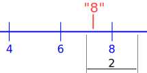
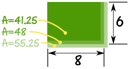
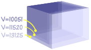

Errors in Measurement
| Error? No ... you didn't measure it wrong ... this is about accuracy. |
Measuring instruments are not exact!
Degree of Accuracy
Accuracy depends on the instrument you are measuring with. But as a general rule:
Examples:
| When your instrument measures in "1"s then any value between 6½ and 7½ is measured as "7" |
 |
| When your instrument measures in "2"s then any value between 7 and 9 is measured as "8" |
 |
Notice that the arrow points to the same spot, but the measured values are different!
Plus or Minus
| We can show the error using the "Plus or Minus" sign: | ± |
When the value could be between 6½ and 7½: 7 ±0.5 The error is ±0.5 |
|
When the value could be between 7 and 9: 8 ±1 The error is ±1 |
Example: a fence is measured as 12.5 meters long, accurate to 0.1 of a meter
Accurate to 0.1 m means it could be up to 0.05 m either way:
Length = 12.5 ±0.05 m
So it could really be anywhere between 12.45 m and 12.55 m long.
Absolute, Relative and Percentage Error
But ... when measuring we don't know the actual value! So we use the maximum possible error.
In the example above the Absolute Error is 0.05 m
What happened to the ± ... ? Well, we just want the size (the absolute value) of the difference.
We don't know the actual measurement, so the best we can do is use the measured value:
Relative Error = Absolute ErrorMeasured Value
Let us see them in an example:
Example: fence (continued)
Length = 12.5 ±0.05 m
So:
Absolute Error = 0.05 m
And:
Relative Error = 0.05 m12.5 m = 0.004
And:
Percentage Error = 0.4%
More examples:
Example: The thermometer measures to the nearest 2 degrees. The temperature was measured as 38° C
The temperature could be up to 1° either side of 38° (i.e. between 37° and 39°)
Temperature = 38 ±1°
So:
Absolute Error = 1°
And:
Relative Error = 1°38° = 0.0263...
And:
Percentage Error = 2.63...%
Example: You measure the plant to be 80 cm high (to the nearest cm)
This means you could be up to 0.5 cm wrong (the plant could be between 79.5 and 80.5 cm high)
Height = 80 ±0.5 cm
So:
Absolute Error = 0.5 cm
And:
Relative Error = 0.5 cm80 cm = 0.00625
And:
Percentage Error = 0.625%
Area
When working out areas you need to think about both the width and length ... they could possibly both be the smallest measure or both the largest.
Example: Alex measured the field to the nearest meter, and got a width of 6 m and a length of 8 m.
Measuring to the nearest meter means the true value could be up to half a meter smaller or larger.

The width (w) could be from 5.5m to 6.5m:
The length (l) could be from 7.5m to 8.5m:
The area is width × length:
The smallest possible area is: 5.5m × 7.5m = 41.25 m2
The measured area is: 6m × 8m = 48 m2
And the largest possible area is: 6.5m × 8.5m = 55.25 m2
Absolute, Relative and Percentage Error
The only tricky thing here is ... which is the absolute error?
- From 41.25 to 48 = 6.75
- From 48 to 55.25 = 7.25
Answer: pick the biggest one! So:
Absolute Error = 7.25 m2
Relative Error = 7.25 m248 m2 = 0.151...
Percentage Error = 15.1%
(Which is not very accurate, is it?)
Volume
And volume has three measurements: width, length and height!
Each measurement could possibly be the smallest possible measure, or the largest.
Example: Sam measured the box to the nearest 2 cm, and got 24 cm × 24 cm × 20 cm
Measuring to the nearest 2 cm means the true value could be up to 1 cm smaller or larger.
The three measurements are:
- 24 ±1 cm
- 24 ±1 cm
- 20 ±1 cm
Volume is width × length × height:
The smallest possible Volume is: 23cm × 23cm × 19cm = 10051 cm3
The measured Volume is: 24cm × 24cm × 20cm = 11520 cm3
The largest possible Volume is: 25cm × 25cm × 21cm = 13125 cm3

And so we get:
Absolute, Relative and Percentage Error
Absolute error:
- From 10051 to 11520 = 1469
- From 11520 to 13125 = 1605
Pick the biggest one:
Absolute Error = 1605 cm3
Relative Error = 1605 cm311520 cm3 = 0.139...
Percentage Error = 13.9%